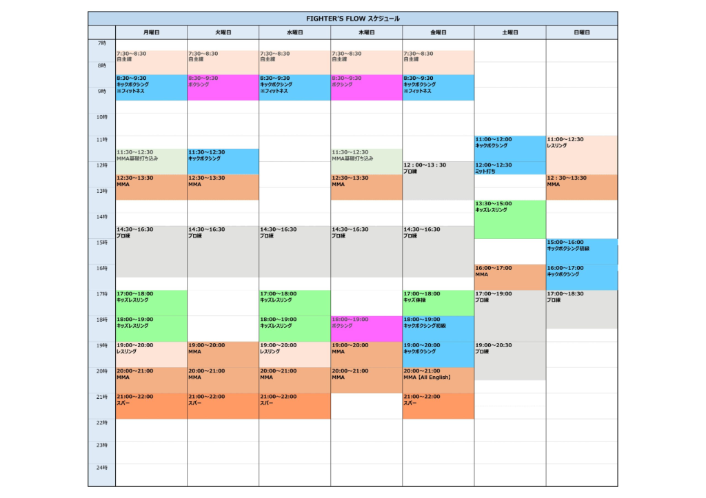

Proyecto Debut Japón (2027–2028) · Alineado con el Plan Maestro
Las etiquetas V2 marcan lo que cambió respecto al dossier original
🔄 Qué cambió en la V2 (Actualización Precios Reales + Campaña 5–0)
₩2,000,000 KRW / $1,449 USD) y se eliminan todas las liposucciones porque te pones duro y al 10% de grasa por tu cuenta.¥25,300/mes), paquetes 1-a-1 con Hayato Suzuki (鈴木 隼人) (¥60,000/5 sesiones o ¥100,000/10 sesiones), y bloques de Lucha (レスリング), MMA【All English】 y Sparring (スパー).| Procedimiento (Corea Viaje 1) | Precio Real Exacto | Fecha | Meses al 15 jul | Meses al 14 sep | Regla en el campamento |
|---|---|---|---|---|---|
| 🦴 Columna VBT (Prof. Chang — Sanggye Paik) | ₩30,000,000 ($21,739) | ~12 ene 2027 | 6 | 8 | Cuello, peso muerto pesado, slams y sparring: solo con autorización escrita |
| 👃 Rinoplastia + Septo + Turbino (Hanabi) | ₩6,200,000 ($4,493) | ~9 feb 2027 | 5 | 7 | Casco con barra nasal en todo sparring de golpeo hasta feb 2028 |
| 🗿 Bichectomía + Eliminación de Papada (심부볼 + 이중턱) | ₩2,000,000 ($1,449) | ~9 feb 2027 | 5 | 7 | Incisión interna invisible; 100% cicatrizada en 4-6 sem (siempre con mouthguard) |
| 🦅 LASEK Personalizado Sin Colgajo (B&VIIT) | ₩2,100,000 ($1,522) | ~26 ene 2027 | 5.5 | 7.5 | Sin restricción después del mes 1 (no deja colgajo corneal) |
| 💇 FUE 1,500 injertos + PRP (Motion) | ₩5,500,000 ($3,986) | ~23 feb 2027 | 4.5 | 6.5 | Sin restricción después de las 4 semanas |
| 🦷 6 Coronas Zirconia + 2 Mouthguards MMA (Oaks) | ₩4,100,000 ($2,971) | feb 2027 | — | — | Siempre con el mouthguard multicapa a medida hecho en Corea |
| 🧠 Checkup + ✨ BLS Piel + 💉 HBOT/IV + 💈 Grooming + 🏨 8 sem Seúl | ₩13,430,000 ($9,732) | ene–mar 2027 | — | — | Total Real Exacto Viaje 1: ₩63,330,000 KRW ($45,892 USD) |
🚩 Junio 2027 — Puerta médica: imágenes nuevas de columna + autorización escrita del Prof. Chang (columna) y de Hanabi (nariz) para entrenar MMA con contacto. Sin las dos, la Fase 0 arranca solo sin contacto. Si algo duele en la columna o en la nariz después de un golpe, se para todo y se hace imagen.
| Etapa | Fechas | Dónde | Visa | Peso |
|---|---|---|---|---|
| Fase 0A: Blindaje V2 | 15 jul – 31 ago 2027 | Tokio (Fighter's Flow + gimnasio + sauna) | Nómada digital → cónyuge 💍 | 87.0 → 85.0 kg |
| Fase 0B: Aclimatación V2 | 1 – 13 sep 2027 | Phuket | DTV | 85.0 → 84.5 kg |
| Fase 1A: Base y volumen (Bloque 60 días) | 14 sep – 12 nov 2027 | Bangtao, Phuket (299,200 THB) | DTV | 84.5 → 79.5 kg |
| Fase 1B: Fusión guante chico (Bloque 30 días) | 12 nov – 11 dic 2027 | Bangtao, Phuket (170,100 THB) | DTV | 79.5 → 78.5 kg |
| Fase 2: Adaptación a Japón | 12 dic 2027 – 23 ene 2028 | Takadanobaba, Tokio | Residente (cónyuge) V2 | 78.5-79.0 kg |
| Fase 3: Campaña 5–0 (Debut + Torneo + Título) | 24 ene – fin de feb 2028 | Takadanobaba → arenas en Tokio | Residente (cónyuge) | 76.9 kg en báscula → 78.5 kg en jaula |
🛡️ Fase 0A — Tokio (15 jul – 31 ago) V2
14 Sep – 12 Nov por 299,200 THB + 12 Nov – 11 Dec por 170,100 THB = 469,300 THB / $13,988 USD) + 13 noches previas en Varee Two Bedroom Suites (1-13 sep por 22,252 THB / $663 USD). Vuelo Tokio → Phuket el 1 de septiembre.🌴 Fase 0B — Phuket (1 – 13 sep) V2
🔥 Fase 1 — La Forja en Bangtao (14 sep – 11 dic)
🇯🇵 Fase 2 — Tokio (12 dic – 23 ene)
🏆 Fase 3 — Fight camp y fight week (24 ene – fin de feb)
🇹🇭 Bangtao Muay Thai & MMA + Mamma Mia Grill — Phuket
Ajarn Wat (Muay Thai) · George y Frank Hickman (MMA y lucha) · Alex Schild (No-Gi) · equipo de S&C
Incluye: clases ilimitadas, 5 privadas de S&C por semana, 5 ice baths por semana, 2 comidas al día (180 comidas), InBody, cupón de 15,000 THB, Main Event Media Package y traslados del aeropuerto. Las 13 noches previas de aclimatación (1-13 sep: 22,252 THB Varee + 20,410 THB Mamma Mia = $1,271 USD) van contabilizadas en la Fase 4 ($3,133 USD exactos).
🇯🇵 Fighter's Flow MMA — Takadanobaba, Tokio
Entrenador 1-a-1 Designado (指名): Hayato Suzuki (鈴木 隼人 · Pro 20-1-2, Campeón GRACHAN, ex-ONE) · Head coach MMA: Takao Ueda
jp.venum.com (Mike Tyson Giant 2.0 Pro + Casco Barra Nasal + Botas Lucha + 4oz/7oz + Shinguards + 9 prendas)¥195,950 ($1,333 USD)Desde tu edificio Urbanex Asakusabashi Front (柳橋1-13-6, con 2–3 meses de Free Rent incluidos en CAPEX): ~22 min en tren. En tus 5 peleas de MMA, Fighter's Flow lleva las negociaciones duras y あやめ brilla como tu Mánager de imagen, redes y vestuario.
En vez de hacer 5 cortes de peso aislados en 5 meses, aprovechas el formato japonés de torneo de eliminación directa en un solo día (3 peleas en una tarde) combinado con 2 combates individuales:
| Pelea # | Evento / Organización en Tokio | Formato y Guantes | Estrategia Clave | Récord y Resultado |
|---|---|---|---|---|
| Pelea 1 (Debut) | KROSS×OVER Amateur MMA o JMMAF Cage Fight (Gen Sports Palace, Shinjuku) | 2×3 min · Guantes amateur ~6–7 oz y espinilleras | Soltar nervios de jaula, medir distancia con calf kicks y cerrar tu primera Anaconda sin recibir daño. | 1–0 (Victoria Debut) |
| Peleas 2, 3 y 4 (Torneo de 1 Día 🏆) | DEEP Future King Tournament (フューチャーキングトーナメント) — Peso Wélter (−77.1 kg) | Cuartos y Semis: 1×5 min · Final: 2×5 min · Sin espinilleras (reglas pre-pro) | 3 victorias en la misma tarde: Cuartos y Semifinal en <90 s con Sprawl → Anaconda para llegar fresco a la Final de 2×5 min. | 4–0 + 🏆 CAMPEÓN DEEP FUTURE KING |
| Pelea 5 (Cinturón #2 🏆) | Torneo Regional de Amateur Shooto (Kanto) o Pelea de Campeonato KROSS×OVER | 2×3 min (final 2×3 o 3×3) · Sin codos, sin GNP a la cabeza en Shooto | Cerrar la campaña invicto con tu esquina de Fighter's Flow (Hayato Suzuki + Takao Ueda) y あやめ grabando la coronación. | 5–0 INVICTO + 🏆 DOBLE CAMPEÓN |
| Hora | Lun | Mar | Mié | Jue | Vie | Sáb | Dom |
|---|---|---|---|---|---|---|---|
| 06:45 | Despertar + electrolitos + pre-entreno | 07:30 despertar | 08:30 sin alarma | ||||
| 08:00 | Muay Thai (pads, calf kicks, clinch) | MMA / lucha (Hickman) | Muay Thai | MMA técnico (transiciones con guante chico) | Muay Thai (codos y rodillas*) | 09:00 No-Gi o Muay Thai | 09:30 huevos + carne |
| 09:45 | S&C privada #1 | 10:00 No-Gi (Schild) | S&C privada #2 | 10:00 No-Gi (front headlock) | S&C privada #3 | 11:00 sparring de golpeo, 16 oz + casco V2 | 11:00 nadar en el mar |
| 11:00 | Filete #1 (250-300 g Tenderloin o Sirloin, término medio) | 12:15 ice bath + Tenderloin #52 | 13:00 Filete #1 (Striploin) | ||||
| 12:30 | Siesta obligatoria | 14:00-16:30 siesta | 15:00 masaje tailandés | ||||
| 16:00 | Muay Thai (sparring y clinch) | 16:30 sparring MMA >75 kg | Privada con el Kru | 16:30 lucha para MMA | 16:30 sparring MMA >75 kg | Descanso activo | Notas y visualización |
| 17:30 | 18:15 No-Gi (escapes) | S&C #4 + ice bath | 18:15 No-Gi + ice bath | S&C #5 + ice bath | Yoga + ice bath | 19:00 🍔 Double Wagyu Burger #28 | 19:30 🥩 Ribeye 250g #54 |
| 19:30 | Filete #2 (Ribeye #54 o Striploin #53) · 21:15 piña/papaya (SIN mango) + yogurt · dormir | Libre (cero alcohol) | 22:00 dormir 9 h | ||||
*Codos: solo si el torneo los permite. En Amateur Shooto están prohibidos. V2
#1 Lunes — Caderas y piernas: trap bar deadlift 4×5 explosivo, box jumps 4×5, landmine rotations 3×8, sled push.
#2 Miércoles — Fuerza para la Anaconda: dominadas con lastre 4×6, remo Pendlay 4×6, Zercher holds / abrazo de saco 4×45 s, farmer's walks.
#3 Viernes — Motor de 6 minutos: 2 bloques de 3 min (60 s de descanso) alternando cada 30 s AirBike, sprawls con balón medicinal y trineo hacia atrás.
#4 y #5 Martes y jueves — Blindaje articular: arnés de cuello en 4 direcciones, rotadores de hombro, Nordic curl y descompresión lumbar.
⚠️ V2 Con la columna operada: trap bar pesado, Zercher y arnés de cuello solo con la autorización del Prof. Chang. Dale al coach de S&C el protocolo por escrito el día 1.
Traducción exacta de la parrilla oficial (`FIGHTER'S FLOW スケジュール`). Los bloques en negrita son las clases clave para tu sistema (Lucha + MMA + Sparring):
| Hora | 月 Lunes | 火 Martes | 水 Miércoles | 木 Jueves | 金 Viernes | 土 Sábado | 日 Domingo |
|---|---|---|---|---|---|---|---|
| 07:30–08:30 | 自主練 — Entrenamiento libre / Open Mat (ideal para saco, movilidad y tibias en Fase 0A) | — | — | ||||
| 08:30–09:30 | キックボクシング ※フィットネス (Kickboxing Fitness) | ボクシング (Boxeo) | キックボクシング ※フィットネス (Kickboxing Fitness) | ボクシング (Boxeo) | キックボクシング ※フィットネス (Kickboxing Fitness) | — | — |
| 11:00–12:30 | 11:30–12:30 MMA基礎打ち込み (Drills básicos MMA) |
11:30–12:30 キックボクシング (Kickboxing) |
Libre (ideal para Privada 1 a 1) | 11:30–12:30 MMA基礎打ち込み (Drills básicos MMA) |
12:00–13:30 プロ練 (Entreno Pro) |
11:00–12:00 Kickboxing 12:00–12:30 ミット打ち (Manoplas) |
11:00–12:30 レスリング (Lucha 90 min) ⭐ |
| 12:30–13:30 | MMA | MMA | — | MMA | (Sigue プロ練 hasta 13:30) | 13:30–15:00 キッズレスリング (Niños) |
12:30–13:30 MMA ⭐ |
| 14:30–16:30 | プロ練 — Entrenamiento Pro (2 h). En Fases 2 y 3, pregunta a Takao Ueda si puedes sumarte 1-2 días. | 16:00–17:00 MMA | 15:00 Kick principiante 16:00 Kickboxing |
||||
| 17:00–19:00 | 17:00–19:00 Lucha niños | Libre (ideal para Privada 1 a 1) | 17:00–19:00 Lucha niños | 18:00–19:00 ボクシング (Boxeo) |
17:00 Gimnasia niños 18:00 Kick principiante |
17:00–20:30 プロ練 (Entreno Pro) |
17:00–18:30 プロ練 (Entreno Pro) |
| 19:00–20:00 | レスリング (Lucha) 🔥 | MMA | レスリング (Lucha) 🔥 | MMA | キックボクシング (Kickboxing) | (Sigue プロ練 hasta 20:30) | — |
| 20:00–21:00 | MMA 🔥 | MMA | MMA 🔥 | MMA | MMA【All English】 🦅🔥 | — | — |
| 21:00–22:00 | スパー (Sparring) 🥊 | スパー (Sparring) 🥊 | スパー (Sparring) 🥊 | Sin sparring (descanso) | スパー (Sparring) 🥊 | — | — |
🎯 Cómo le sacas jugo en Tokio (Fases 2 y 3 — Rumbo al Debut)
1. Lun y Mié (19:00–22:00) — La Cadena Anaconda (3 h): Haces 1 h de レスリング (Lucha) (entradas, sprawls y front headlock) → 1 h de MMA → 1 h de スパー (Sparring) con casco y mouthguard coreano.
2. Viernes (19:00–22:00) — Noche en Inglés + Guerra: 19:00 Kickboxing → 20:00 MMA【All English】 (puedes preguntar cada detalle técnico en inglés sin barrera de idioma) → 21:00 スパー (Sparring).
3. Mar y Jue al mediodía (11:30–13:30) + 2 Privadas 1 a 1: El jueves tienes MMA基礎打ち込み (drills de MMA) + MMA de 11:30 a 13:30. Mete tus 2 sesiones privadas 1 a 1 (Personal Studio, lado oeste) los martes y sábados al mediodía para pulir el Gator Roll y el plan de pelea del torneo.
4. Domingo de Grappler (11:00–13:30): 90 min seguidos de レスリング (Lucha) + 1 h de MMA, y tarde libre con Ayame comiendo un buen Ribeye.
📸 Horario original de Fighter's Flow (clic para ampliar)

🚨 REGLAS INQUEBRANTABLES DEL REY (SALUD Y FUERZA)
🚫🥭 ALERGIA ESTRICTA AL MANGO: Prohibido el mango en cualquier forma (nada de Mango Sticky Rice, nada de batidos de mango y siempre pedir el plato de fruta fresca sin mango: solo piña, sandía o papaya). En tailandés para mostrarle al mesero: 「แพ้มะม่วง ไม่ใส่มะม่วงนะครับ」 (Phae mamuang, mai sai mamuang na khrap = «Soy alérgico al mango, no le ponga mango por favor»).
🚫🍺 CERO ALCOHOL: No bebes una sola gota de alcohol. Ignora toda la carta de cócteles, cervezas y vinos.
🥩🍔 DIETA HIPER-CARNÍVORA (PUROS FILETES + HAMBURGUESA OCASIONAL): Para hacerte duro, denso y fuerte, tu base diaria son 2 filetotes de res australiana grass-fed al día (500–600 g de carne roja diaria) ricos en creatina natural, hierro hemo, zinc y carnosina, más 1 o 2 veces por semana una Prime Wagyu Burger en días pesados de sparring o sábado en la noche. Cero relleno de pollo, cerdo, pastas ni ensaladas.
3,100
kcal/día (gasto ~4,000)
235 g
proteína (puro filete + huevos)
275 g
carbos limpios (papa, arroz, miel, piña)
115 g
grasas anabólicas (res + yemas)
Agua 4.5-5.5 L/día · 3 sobres Royal-D · creatina 5 g en la mañana (+ ~3 g naturales de tus filetes = saturación total) · omega-3 3 g + magnesio glicinato 400 mg en la noche.
| Corte (250–300 g) | Función en el campamento | Macros (solo la carne) | Phuket (Villa Market) | Tokio (Hanamasa / OK Store) |
|---|---|---|---|---|
| Beef Tenderloin (Lomo fino) | Mediodía o corte de peso (proteína pura, digestión rápida) | 340 kcal · 55 P · 12 G | 398-490 THB | ~¥1,400 |
| Top Sirloin / Picanha magra | Mediodía diario: denso, firme y lleno de hierro | 365 kcal · 56 P · 14 G | 240 THB | ~¥780 |
| Flank / Skirt Steak (Arrachera) | Mediodía o cena rápida a la sartén | 410 kcal · 53 P · 20 G | 190-225 THB | ~¥850 |
| Striploin (New York) | Cena de lunes, miércoles y jueves | 485 kcal · 52 P · 29 G | 360 THB | ~¥1,000 |
| Ribeye (Ojo de bife) | Cena tras sparring pesado (martes, viernes y domingo): máximo colesterol bueno y testosterona | 560 kcal · 48 P · 38 G | 399-465 THB | ~¥1,150 |
Regla 3 – 2.5 – 4 (filete de 3 cm en sartén de hierro): 3 min el lado A · 2.5 min el lado B · 4 min de reposo en tabla.
🇹🇭 「เอาความสุกระดับมีเดียมนะครับ ไม่ราดซอส」 · 🇯🇵 「ミディアムでお願いします。ソースは別皿で。」
📍 116/69 Bangtao Beach, Thalang, Phuket 83110, en la misma zona de Bangtao que tu gimnasio
🕘 Abierto diario de 09:00 a 00:00 · Wi-Fi: mamma123
💬 WhatsApp y reservas: +66 81 629 5063
🏆 #1 de 68 restaurantes en Bang Tao (Tripadvisor) · Travelers' Choice · 4.5 en Google
🥩 Cortes importados de res australiana grass-fed y hamburguesas Prime Wagyu hechas a mano
🌐 Menú completo · Galería
✅ Precios verificados directo de las fotos del menú. Todos los filetes incluyen elote asado, verduras del chef, papa al horno y salsas.
| Corte en el menú | Precio real | Cuándo pedirlo | Macros (con papa sin mantequilla y elote) |
|---|---|---|---|
| #52 Beef Tenderloin 300 g 👑 | 1,095 THB (~$32.60) | El filetote rey: mediodía o cena cuando quieres 300 g de lomo fino puro | 790 kcal · 72 g P · 68 C · 18 G |
| #54 Ribeye 250 g 🔥 | 695 THB (~$20.70) | Cena de martes, viernes y domingo (después del sparring pesado de MMA) | 840 kcal · 56 g P · 68 C · 38 G |
| #51 Beef Tenderloin 200 g | 795 THB (~$23.70) | Mediodía entre entrenamientos (se digiere rapidísimo antes de la tarde) | 620 kcal · 48 g P · 68 C · 12 G |
| #53 Striploin 200 g ⭐ | 545 THB (~$16.25) | Tu filete de batalla para cenar lunes, miércoles y jueves | 680 kcal · 48 g P · 68 C · 23 G |
| #62 Skewer Beef Tenderloin | 650 THB (~$19.35) | Brocheta gigante de tenderloin a la parrilla con pimientos, cebolla y champiñones | 610 kcal · 52 g P · 68 C · 14 G |
| #50 Beef Tenderloin 100 g | 455 THB (~$13.55) | Booster carnívoro: pídelo como extra junto a tu Ribeye o Striploin para llegar a 350 g de carne | +170 kcal · +22 g P · +5 G (solo carne) |
| #84 Thai Beef Garlic & Pepper | 295 THB (~$8.80) | Trozos de striploin australiano salteados al ajo y pimienta (opción rápida de mediodía con arroz jazmín) | 540 kcal · 42 g P · 45 C · 18 G |
Hechas a mano en el restaurante con carne Prime Wagyu en pan de ajonjolí tostado. Se sirven con papas fritas y aros de cebolla. Ideales 1 a 2 veces por semana (por ejemplo, sábado en la noche tras toda la semana de guerra o viernes post-sparring) para meter calorías densas, sodio y fuerza bruta:
| Hamburguesa | Precio real | Cuándo meterla | Macros estimados |
|---|---|---|---|
| #28 Double Burger 300 g (Prime Wagyu + Bacon & Cheese) 🍔👑 | 695 THB (~$20.70) | La cena del rey los sábados (o después del sparring más pesado de la semana). Doble carne Wagyu (300 g) + tocino + queso. | ~1,150 kcal · 74 g P · 65 C · 62 G |
| #27 Beef Burger 150 g (Prime Wagyu) 🍔 | 395 THB (~$11.80) | Antojo a mitad de semana al mediodía o combinada con un #50 Tenderloin 100g a un lado | ~720 kcal · 38 g P · 62 C · 34 G |
💡 Orden maestra para la #28 Double Wagyu: "No garlic dressing on the burger, please" y deja los aros de cebolla empanizados si quieres mantener la cintura en 10% de grasa mientras subes fuerza.
✅ Lo que sí pides
🚫 Prohibido en tu mesa
🏆 Tu banquete de victoria tras el debut: Un Tenderloin de 300 g (#52) + una Double Wagyu Burger (#28) + batido helado de sandía o piña.
💰 Cuenta Exacta Hiper-Carnívora en Mamma Mia (90 días): Según tu rutina semanal exacta (3 noches #53 Striploin 200g a 545 THB + 3 noches #54 Ribeye 250g a 695 THB + 1 noche sábado #28 Double Wagyu Burger 300g a 695 THB + 1 mediodía sábado #52 Tenderloin 300g a 1,095 THB + 7 platos de fruta sin mango a 80 THB + agua/shake) son exactamente 6,520 THB por semana (931.43 THB/día) = 83,829 THB ($2,499 USD exactos) en los 90 días (usando las 2 comidas diarias incluidas en Bangtao para tu desayuno de huevos/carne y batidos post-entreno). Reserva por WhatsApp los días de sparring para que tu filete esté en la parrilla apenas salgas del tatami.
Trampa A — Calf kick → sprawl
2-3 patadas bajas en el primer minuto. Cuando entre desesperado a tus piernas, sprawl con todo tu peso en su nuca y front headlock.
Trampa B — Rodillas en tortuga V2
1-2 rodillas cortas al costado. Cuando abra el codo, metes el brazo. Solo si el torneo permite rodillas al rival en el suelo. Si no: presión de hombro + jalón de muñeca para abrir el codo.
Trampa C — Jab + finta de overhand + snap-down
Finta el volado para que baje la cabeza y jálale la nuca a la lona (collar tie).
🔒 Los 4 detalles de la finalización
1. El ancla del guante: pasa el guante por su axila y engánchalo detrás de tu bíceps. Funciona igual con 4 o con 6 oz. V2
2. Colapsar el codo: empújalo hacia su ombligo antes de rodar.
3. Gator roll a 45°: rueda con el hombro bajo su torso y atrapa una de sus piernas entre las tuyas.
4. Compresión en "C": caderas adentro y camina hacia sus caderas. Si abre el brazo: D'Arce o espalda + mataleón.
🏟️ Domingo de pelea en Tokio
⚡ Protocolo Táctico para Ganar 3 Peleas en la Misma Tarde (DEEP Future King Tournament) V2
1. Regla de los 90 segundos en Cuartos y Semifinal: Cero guerra de desgaste arriba. En las dos primeras peleas del día tu objetivo es llevar la pelea a la reja o al suelo en el primer minuto y someter con Anaconda / D'Arce / RNC sin haber recibido un solo golpe limpio.
2. Cuidado de tibias y manos: Si pateas un codo o una rodilla en cuartos de final, no podrás apoyar el pie en la final 2 horas después. Usa fintas, presión de jaula, underhooks y derribos con cabeza por fuera protegiendo tu cuello y columna VBT.
3. Nutrición e hidratación entre peleas del mismo día (con あやめ y tu esquina):
| Fase / Concepto y Desglose Exacto Verificado | Moneda Local | Precio Real (USD) |
|---|---|---|
| 1. 🇺🇸 Estudios Pre-Viaje EE.UU. (X-ray columna EOS $140 + MRI sin contraste DICOM $320 + Topografía LASIK $0 + Panorámica OPG $90) | $550 USD | $550 |
| 2. 🇰🇷 Corea Viaje 1 Completo (Columna VBT ₩30.0M + Rino Hanabi ₩6.2M + Bichectomía y Papada ₩2.0M + LASEK ₩2.1M + FUE ₩5.5M + 6 Coronas y 2 Mouthguards ₩4.1M + Checkup ₩2.2M + BLS ₩1.85M + HBOT/IV ₩1.1M + Grooming ₩280K + 8 sem Seúl ₩8.0M) | ₩63,330,000 KRW | $45,892 |
| 3. 🇯🇵 Recuperación y Fisio en Tokio (mar–jul 2027) (2 controles rayos X en St. Luke's ¥70,000 + 18 sesiones fisioterapia vertebral ¥153,000) | ¥223,000 JPY | $1,517 |
| 4. 🛡️ Fase 0A Tokio + 0B Aclimatación Phuket (15 jul – 13 sep 2027) (Fighter's Flow Oro 2m ¥50,600 + Pack 5 privadas Hayato Suzuki ¥60,000 + Visa DTV ¥50,000 + Seguro contacto $420 + Vuelo NRT→HKT $350 + 13 noches Varee 2BR 22,252 THB + 13 días Mamma Mia 20,410 THB) | Mixto (JPY/THB/USD) | $3,133 |
5. 🇹🇭 Campamento Bangtao 90 Días + Filetotes Mamma Mia (14 sep – 11 dic 2027) (Checkout Bangtao 299,200 + 170,100 = 469,300 THB / $13,988 + Cuenta exacta 90 días Mamma Mia 6,520 THB/sem = 83,829 THB / $2,499 + Suplementos/Royal-D/12 Masajes 12,390 THB / $369) | 565,519 THB | $16,856 |
6. 🇯🇵 Tokio Camp + Equipamiento Venum Japan + Campaña 5 Peleas (5–0) (Vuelo HKT→TYO $380 + Fighter's Flow Oro 3m ¥75,900 + 2 Packs 10 privadas Hayato Suzuki ¥200,000 + Carrito 18 piezas jp.venum.com Mike Tyson $1,333 + Serología ¥12,000 + 3 Torneos/5 Peleas y OS-1 ¥47,000) | ¥586,710 JPY | $3,992 |
| 7. 🇰🇷 Corea Viaje 2 — Estética Fina Post-Campaña (CERO LIPO) (Cantoplastia Hunter Eyes JW/Wink ₩2.4M + 5 Carillas MINISH/Oaks y Blanqueamiento ₩5.75M + Botox/Rejuran I ojeras ₩450K + 3.5 sem desde Tokio ₩3.5M) | ₩12,100,000 KRW | $8,768 |
| 8. 🏢 CAPEX Casa Urbanex Asakusabashi Front (Muebles Funcionales + Setups Intactos) (¥2,360,190 · 0 depósito, 0礼金 · Setups PC/Stream ¥985,160 y Gaming あやめ ¥586,440 intactos + muebles funcionales Nitori + Refrigerador 282L + Lavadora 8kg + taller textil JUKI) | ¥2,360,190 JPY | $16,056 |
| 9. 👕 Guardarropa Imperio V8 + Ecosistema Samsung (110 prendas verificadas + 13 pares US 14 + 6 Kits Custom Pelea $11,648 + Tab S11 Ultra 1TB + Watch Ultra + Ring + Buds3 Pro $3,578) | $15,226 USD | $15,226 |
| 10. 🛂 Trámites Legales de Visa y Matrimonio en Japón (Visa Nómada Digital $180 + Registro Kon'in Todoke y Affidavit $150 + Abogado Gyōseishoshi COE Cónyuge ¥165,000 / $1,122) | ¥213,500 JPY | $1,452 |
| 🏆 GRAN TOTAL REAL EXACTO DE GASTOS ÚNICOS (LAS 10 FASES COMPLETAS) | — | $113,442 USD |
📄 Documentos
🥊 Equipo 100% VENUM JAPAN (jp.venum.com — Colección Mike Tyson "Tiger" & Black/Gold ↗)
🩹 Botiquín de tatami
Mupirocina (Bactroban) · clotrimazol · jabón antibacterial (Dettol o Hibiscrub) · cortaúñas · cinta deportiva. V2 + gotas lubricantes para los ojos (post-LASEK) y protector solar para cicatrices.